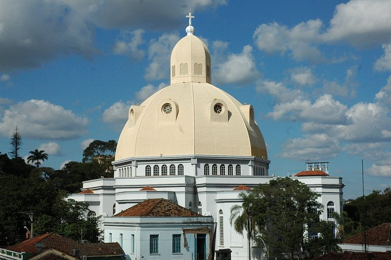
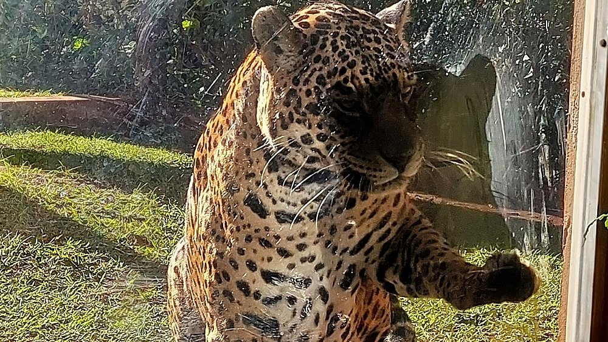
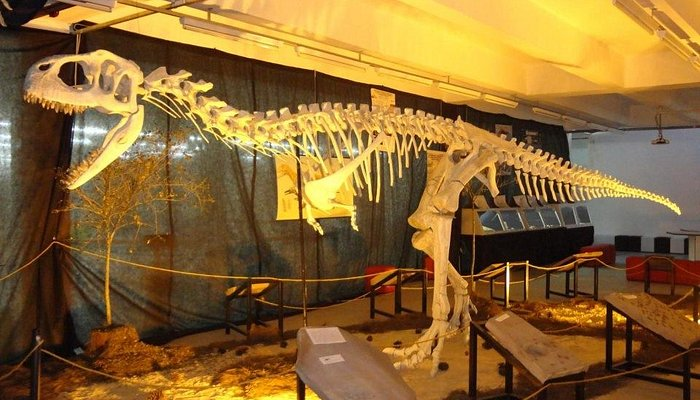
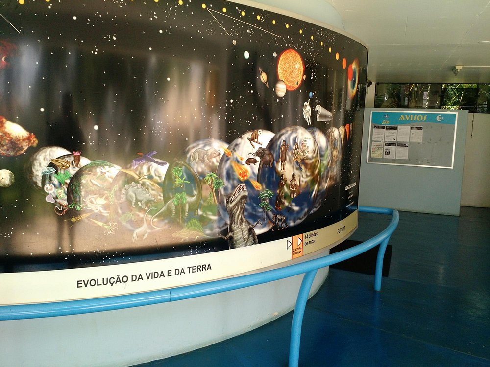
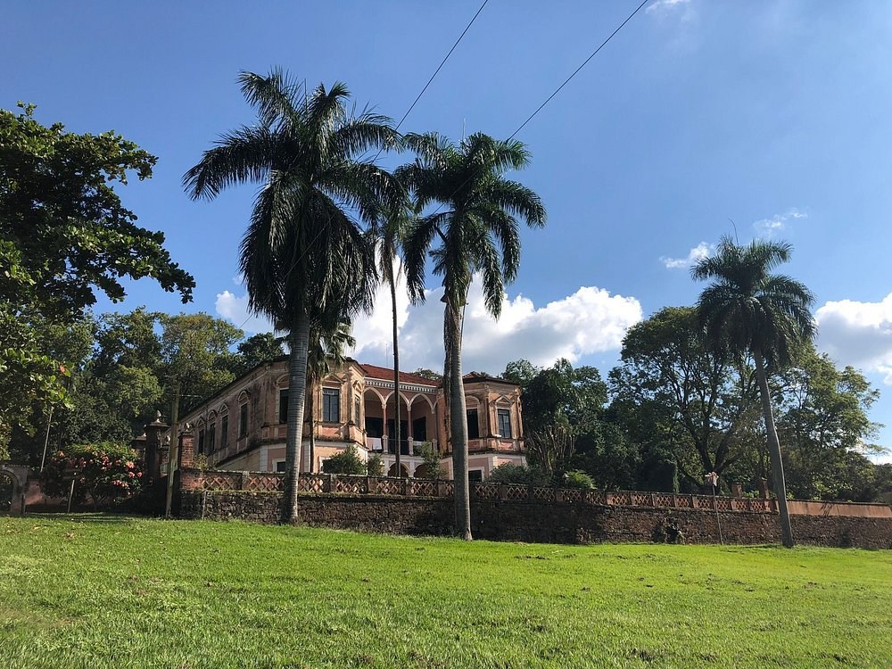
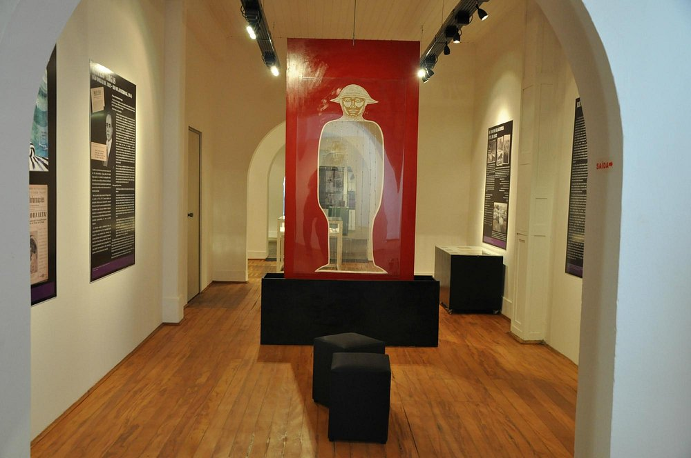

A Catedral de São Carlos ou Catedral São Carlos Borromeu está localizada na Praça Dom José Marcondes Homem de Melo, em São Carlos (São Paulo). O prédio é considerado o marco zero da cidade. Com uma cúpula com mais de 70 metros de altura e 30 metros de diâmetro, é uma réplica arquitetônica da Basílica de São Pedro no Vaticano.

O Parque Ecológico Dr. Antônio Teixeira Vianna, situa-se ao lado da Universidade Federal de São Carlos. Possui a entrada gratuita, seu horário de funcionamento é de terça a domingo das 8h às 16h30min, sendo um excelente local para se visitar com a família e amigos, além de relaxar por meio do contato com a natureza.

O Museu da Ciência Professor Mario Tolentino, foi inaugurado em 2012 como um espaço dedicado à recreação e educação com foco nas áreas científica, tecnológica e artística. Com diversas atrações interativas e experimentos, o museu foi criado pela prefeitura, sendo nomeado em homenagem ao professor, pesquisador e historiador Mario Tolentino

O Observatório Astronômico da USP ou Observatório Dietrich Schiel foi implantado em 4 de abril de 1986 e inaugurado no dia 10 de abril do mesmo ano. Está instalado no "Campus 1" da USP da cidade de São Carlos. As visitas livres ao Observatório ocorrem de sexta-feira a domingo, das 20h às 22h. O Observatório também presta orientações técnicas e científicas sobre Astronomia aos interessados.

A Fazenda Santa Maria do Monjolinho é uma fazenda histórica localizada no município de São Carlos, interior de São Paulo. Foi tombada pelo CONDEPHAAT em 22 de junho de 2016. Situada às margens do Rio Monjolinho, ela também faz parte do circuito rural de fazendas já tombadas no município, que incluem a Fazenda Conde do Pinhal e a Fazenda Santa Eudóxia

O Museu Histórico e Pedagógico Cerqueira César, ou Museu de São Carlos, localiza-se na cidade de São Carlos, no estado de São Paulo, Brasil. Criado em 1951, e inaugurado em 1957, o Museu conta com mais de 7.000 itens em seu acervo relativos à cidade de São Carlos e seus moradores, dentre estes a réplica de uma carruagem nos moldes da utilizada por Dom Pedro II quando visitou a cidade em 1886
